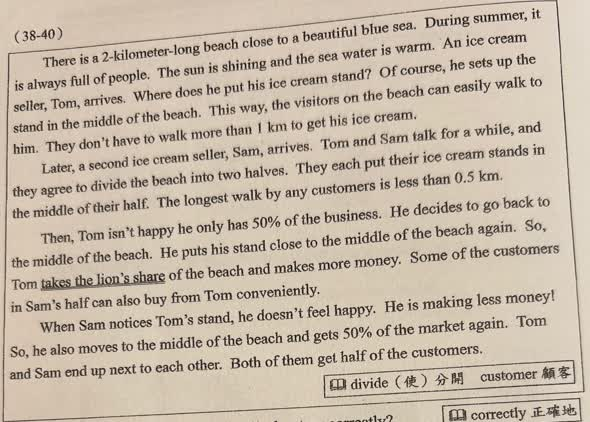
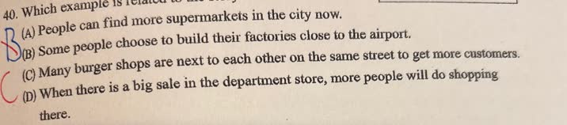

分享原卷｜第40題
完整原題
作答所需文章／材料
There is a 2-kilometer-long beach close to a beautiful blue sea. During summer, it is always full of people. The sun is shining and the sea water is warm. An ice cream seller, Tom, arrives. Where does he put his ice cream stand? Of course, he sets up the stand in the middle of the beach. This way, the visitors on the beach can easily walk to him. They don't have to walk more than 1 km to get his ice cream. Later, a second ice cream seller, Sam, arrives. Tom and Sam talk for a while, and they agree to divide the beach into two halves. They each put their ice cream stands in the middle of their half. The longest walk by any customers is less than 0.5 km. Then, Tom isn't happy he only has 50% of the business. He decides to go back to the middle of the beach. He puts his stand close to the middle of the beach again. So, Tom takes the lion's share of the beach and makes more money. Some of the customers in Sam's half can also buy from Tom conveniently. When Sam notices Tom's stand, he doesn't feel happy. He is making less money! So, he also moves to the middle of the beach and gets 50% of the market again. Tom and Sam end up next to each other. Both of them get half of the customers. 【原卷字詞】divide（使）分開；customer 顧客；correctly 正確地；be related to 和……相關。Which example is related to the story?
(A) People can find more supermarkets in the city now.
(B) Some people choose to build their factories close to the airport.
(C) Many burger shops are next to each other on the same street to get more customers.
(D) When there is a big sale in the department store, more people will do shopping there.
先想一想，再查看答案、解說與原圖
原卷作答：B（原卷紅筆訂正C）
正確答案：C。同類店家在同一條街相鄰以吸引顧客，與兩個冰淇淋攤位聚在中央相似。
逐項解析
| 選項與原句 | 判讀 | 句意與判斷理由 |
|---|---|---|
| (A) People can find more supermarkets in the city now. | 不選 | 只說超市變多，未涉及相似店家相鄰競爭的位置選擇。 |
| (B) Some people choose to build their factories close to the airport. | 不選 | 工廠靠機場可能為運輸便利，不是故事中競爭者最後靠在一起的模式。 |
| (C) Many burger shops are next to each other on the same street to get more customers. | 應選 | 同類店家在同一條街相鄰以吸引顧客，與兩個冰淇淋攤位聚在中央相似。 |
| (D) When there is a big sale in the department store, more people will do shopping there. | 不選 | 打折吸引購物是價格活動，沒有故事中的相鄰設點。 |
詳細說明與解題步驟
【文章完整中譯】
一片長2公里的海灘靠著美麗藍海，夏天總是人很多，陽光照耀，海水溫暖。冰淇淋小販Tom來了，把攤位設在海灘中間，讓遊客方便走來買；任何人都不用走超過1公里。
另一位小販Sam也來了。兩人商量把海灘分兩半，各把攤位放在自己那一半的中間，原文說顧客最遠走少於0.5公里。
Tom不滿足只有50%的生意，決定再回到接近海灘中央的位置，分到最大一份生意、賺更多錢；連Sam那邊的部分遊客也能方便向Tom購買。
Sam發現後不高興，因為收入變少，也把攤位移到海灘中央，重新取得50%的市場。最後兩人攤位相鄰，各分得一半顧客。
【原文距離措辭的精確說明】
原文less than 0.5 km照留。依圖把長2公里海灘的端點也計入，各半中央的位置分別在0.5與1.5公里，端點到最近攤位正好0.5公里，嚴格說應是最多、不超過0.5公里，而不是一律小於。這處措辭不影響故事圖序、片語與主旨的判斷。
【題意與類比】
問哪個例子與故事相關。重點是競爭同一批顧客的商家，在搶客過程中選擇相近位置，最後相鄰。C漢堡店在同一條街相鄰、為了吸引更多顧客，最貼近。B同樣提到位置，但只是工廠與機場靠近，關係不同；A店家數量、D折扣，都少了這種同類商家的設點競爭。
這是閱讀類比，不是斷言所有商店都一定開在中央。
核對註記：已依原卷或完整文字核對並獨立解題；對應教材課次未確認，歸綜合。
原圖（僅本題）

